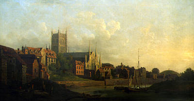

So far we have traced our Wainwright line back to William Wainwright who married Jane Barber at St Martins in Worcester in December 1813. We know little of William other than he was a bricklayer. The couple had two boys in Worcester before moving to Gloucester in about 1819.

After the birth of another boy in Gloucester the couple had their first daughter, named Jane, after her mother. Jane was baptised on 27 July 1823 at St Mary De Lodes, Gloucester. By 1831 the family were in West Bromwich and by 1836 William and Jane had two more daughters. William appears to have died between 1836 and 1841.
By the 1841 census, William's widow, Jane Wainwright was living in Belper with her three daughters. She and her oldest daughter, Jane, are described as 'dressmaker'. Within three years Jane (junior) is marrying George Marshall , a glove maker. She is described as a 'silk hand of Abbey Barns, Derby'. In 1851George and Jane are living with George's family in Full Street, Derby. By 1861 they have their own home in Bloom Street Derby, they also have five children and George's elderly father living with them.
By 1870 Jane has been widowed and has remarried a shoemaker by the name of John Merry. In 1881 she is living with her married daughter Hannah and her family in Radford Nottingham. In 1891 she appears as a lodger and by 1901 she is living with her grandchild. All this time she remains in Nottingham and is described a 'dressmaker'. Jane died in Nottingham in 1904, at the age of 80.
Current Research:
Click here for full details of our Wainwright ancestry
July 16, 2011